20 candidates for Emmet's technique library (session 3C, H-22). Each was found in your instruction books and ranked by how widely official models in the LDraw OMR join its key parts (483 sets mined). Each picture is a render of my sketch of it in Emmet's DSL, which validates with no findings; an accepted sketch becomes the technique, with its tests and render, and a rejected one is dropped. Nothing is taken from the models' files or the books' pages (D-48). Every candidate starts as Accept: switch the ones you don't want, add a note if it helps, then copy your answers and paste them to Claude.
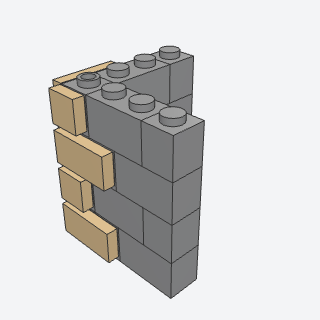
quoin_cornerAlternating long and short stone blocks on the side studs of a wall's corner columns; use on cottages and town houses.
Stone corners in a contrasting color, long and short blocks alternating, on any house corner or door jamb; one of the clearest signs of a designed building.
courses, color, both_faces, phasebatch-1/quoin_corner.py4733 + 3794b (some of its parts weren't confirmed from the book; I'd pin them when writing it)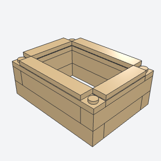
wall_top_tieA course of plates across the tops of the walls, over the corner joints, finished with tiles except a few studs to locate what goes on top.
A course of plates across the wall tops that overlaps every corner joint, then tiles that leave a few studs: what locks walls together and lets a floor or roof lift off. The cottage needs it.
length, depth, color, studsbatch-1/wall_top_tie.py3666 + 3004 (some of its parts weren't confirmed from the book; I'd pin them when writing it)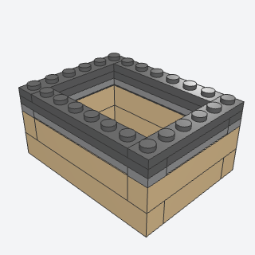
lift_off_roof_seatTile the wall top smooth except a few jumper studs so a separately built roof locates on them and lifts off; use whenever the interior should be reachable.
Lets a roof or upper floor lift off to show the inside, which every house in the books does; pairs with wall_top_tie.
footprint, stud_positions, tile_colorbatch-1/lift_off_roof_seat.py4162 + 3794b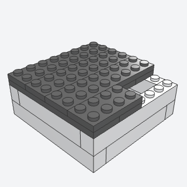
lift_off_floorLift-off upper floor made of two crossed layers of large plates around a stairwell opening, for every modular story.
Upper floors as their own units: two layers of plates with crossing seams around a stair opening. For any building of more than one story.
footprint, stair_position, overhang, colorbatch-1/lift_off_floor.py4282 + 3035 + 3032 (some of its parts weren't confirmed from the book; I'd pin them when writing it)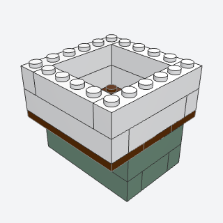
jettied_floorUpper floor plate that projects one stud past the wall below on the street sides, for overhanging Tudor stories.
An upper story that overhangs the one below by a stud: an easy way to make a town house look old and real.
overhang, sidesbatch-1/jettied_floor.py4282 + 4162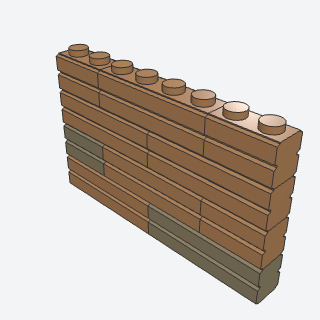
masonry_wallRunning-bond wall panel of embossed and plain bricks built flat and attached, for exposed brick, rear walls and chimneys.
Brick-textured walls in running bond with a few patched bricks; a plain wall made to read as brickwork.
length, height, bond_offset, color_mix, feature_positionsbatch-1/masonry_wall.py98283 + 15533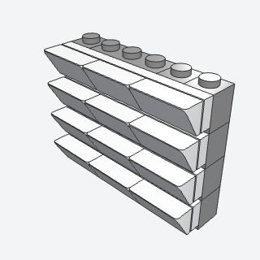
clapboard_sidingA sideways siding strip of cheese slopes on a long plate, hung on side studs to give a wall or narrow pier lap-siding in another color.
Lap siding from slopes on a plate hung on side studs, for wooden houses and barns.
length, slope_color, backer_color, layers, sidebatch-1/clapboard_siding.py85984 + 3460 + 4733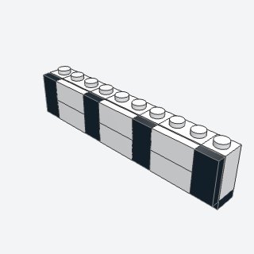
half_timber_bandWhite plaster wall with black timber posts and diagonal braces built studs-out, for Tudor or half-timbered upper stories.
White plaster with black timber posts and braces, for Tudor and half-timbered stories.
length, bay_count, post_spacing, brace_pattern, plaster_color, timber_colorbatch-1/half_timber_band.py32952 + 3023b (some of its parts weren't confirmed from the book; I'd pin them when writing it)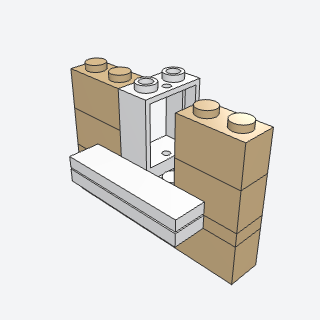
window_sillA deep window sill from a flat 1x4 panel, with a two-stud plate on the base's side studs as a band below it.
A deep sill under a window, so windows don't sit flat in the wall.
sill_width, colorsbatch-1/window_sill.py99206 + 3023b (some of its parts weren't confirmed from the book; I'd pin them when writing it)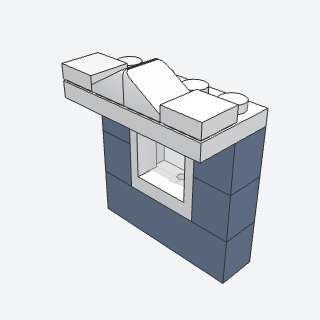
window_hoodSmall peaked hood over a window from two mirrored slopes on a plate, for upper-floor window trim.
A small peaked or flat hood over a window; with window_sill it frames a window the way the books do.
width, peak_stylebatch-1/window_hood.py54200 + 3666 (some of its parts weren't confirmed from the book; I'd pin them when writing it)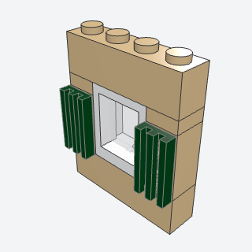
shuttered_windowAn arched lattice window in a wall gap with shutter mounts on side studs either side; use for cottages and chapels.
A cottage window with shutters on side studs either side.
arched, shutters, colorbatch-1/shuttered_window.py30044 + 30046 (some of its parts weren't confirmed from the book; I'd pin them when writing it)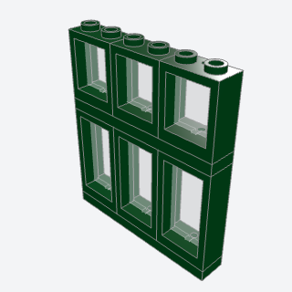
shop_windowShop window on a 1x6 plate with small transom frames over taller panes and a bar course between, for ground-floor shopfronts.
A ground-floor shop window built as a unit on a plate, transoms over tall panes; for stations and town buildings.
width, pane_heights, frame_colorbatch-1/shop_window.py60592 + 60593 + 3666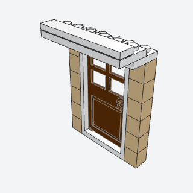
door_hoodCornice over a door from a 1x6 plate with corner plates and jumpers below and a tile on top, overhanging by one stud.
A projecting cornice over a door, held by jumpers and corner plates.
width, overhang, pedimentbatch-1/door_hood.py3666 + 3794b + 6636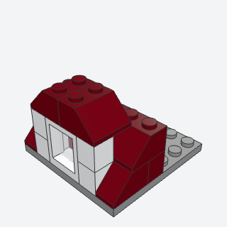
roof_dormerA 45-degree pitched roof with a crossing front gable, a valley filler on a side stud and a rounded ridge; use for houses.
A small gable crossing a pitched roof, with the valley filled on a side stud; it breaks up a long roof.
span, length, dormer_position, roof_color, ridge_colorbatch-1/roof_dormer.py3659 + 87087 + 54200 (some of its parts weren't confirmed from the book; I'd pin them when writing it)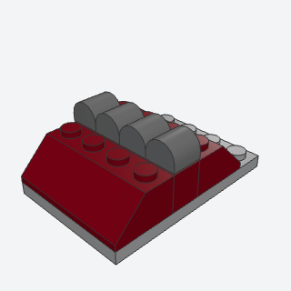
ridge_capA row of curved-top bricks along a roof's ridge, so the ridge reads as a rounded roll.
A rounded cap along the ridge of a roof instead of a row of bare double slopes.
length, colorbatch-1/ridge_cap.py3037 + 49307 (some of its parts weren't confirmed from the book; I'd pin them when writing it)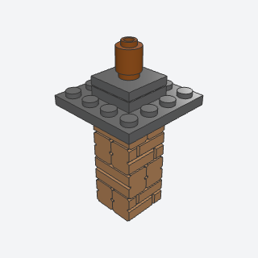
chimney_stackFreestanding embossed-brick chimney with a stepped-out cap and round chimney pots, for rooftops.
A brick chimney with a stepped-out cap and pots, built on the roof.
footprint, height, pot_count, cap_overhangbatch-1/chimney_stack.py98283 + 87580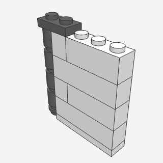
downpipeRainwater downpipe of round 1x1 bricks stacked on a round plate up a wall corner.
A rainwater downpipe of round bricks up a wall corner; a cheap detail that makes a wall look finished.
height, colorbatch-1/downpipe.py6141 + 3062b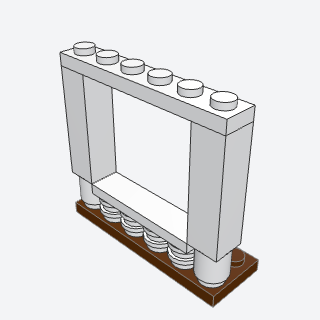
porch_postsPorch posts of a round 1x1 under a 1x1x3 brick, plus a balustrade of short spindles on studs capped with a tile rail.
Porch posts and a low balustrade, for porches, verandas, and station canopies.
post_height, spindle_count, rail_colorbatch-1/porch_posts.py3062b + 14716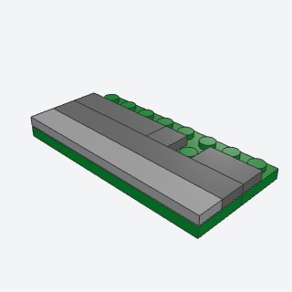
sidewalkStreet edge of a modular baseplate: light tile curb, dark tile pavement and a few exposed studs for street furniture.
The street edge: a light tile curb and dark pavement with a few studs for street furniture.
curb_width, depth, stud_positionsbatch-1/sidewalk.py4162 + 3068b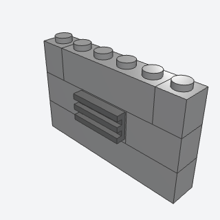
wall_ventA grille tile on the side studs of a 1x2 brick to make a vent, radiator or grate in a wall course.
A grille on the side studs of a brick in a wall course: a vent, radiator, or grate.
color, facingbatch-1/wall_vent.py11211 + 2412b